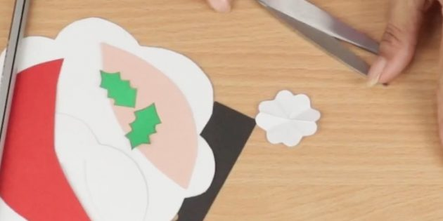

.jpg)
Что такое открытка
Открытка — сокращение словосочетания «открытая карточка» или "открытое письмо". Одну ее сторону занимает художественное изображение, другую — короткий текст. Имя и координаты адресата — опциональный атрибут, они могут быть размещены как на самой открытке, так и на конверте или не размещаться вовсе. Интересно, что по тому же принципу появилось слово «визитка», то есть визитная карточка.
История появления открытки
Дискуссии о появлении открыток ведутся историками и искусствоведами. Прототипом современного варианта считаются древнекитайские поздравительные визитки: их оставляли хозяину дома, если он отсутствовал. Главным элементом здесь был именно текст: он содержал пожелания и похвалы, подчеркивал уважительное отношение к собеседнику.
В Европе открытки независимо появляются во Франции, Великобритании и Германии. Первое упоминание в прессе относится к 1777 году: «Парижский почтовый альманах» даже называет имя автора-создателя — гравер Демезон. Гравюры делались вручную или тиражировались в типографиях. Такие поздравления были популярны в аристократической среде: они свидетельствовали о незримой принадлежности к миру искусства.
Самая старая открытка хранится в лондонском Британском музее. Она датируется XV в., а создание приписывается герцогу Орлеанскому. Находясь в заключении, он придумал средство выражения любви к жене, одновременно сообщая об этом и всему миру. К сожалению, официальная история первой открытки отказывается признавать первенство изобретения влюбленного вельможи.
Официальной датой рождения открыток признан 1869 год. Автор изобретения «корреспондентской карточки» — австрийский профессор Эммануил Герман. Заручившись государственной поддержкой, почтовая служба Австрии начинает массовый выпуск открыток. Они применялись только для информирования адресата, марка печаталась типографским способом, а изображение отсутствовало.
Постепенно изобретение распространяется по всей Европе, проникает в Америку и Азию. Параллельно развиваются и поздравительные открытки: на них присутствуют рисунки, и акцент делается именно на изображение.
Новогодняя открытка с Дедом Морозом своими руками

Что нужно
- Белая бумага или картон;
- карандаш;
- ножницы;
- линейка;
- чёрная бумага или картон;
- оранжевая бумага или картон;
- персиковая бумага или картон;
- красная бумага или картон;
- зелёная бумага или картон;
- канцелярский нож;
- дырокол;
- светло‑голубой картон;
- клей;
- объёмный двусторонний скотч;
- красные стразы;
- розовая бумага или картон.
Пошаговая инструкция
1.Белую бумагу согните поперёк пополам, отрежьте половину. Нарисуйте на одной части бороду, как показано на фото и в видео ниже, и вырежьте её.
2.На второй половинке белого листа нарисуйте усы и вырежьте их.
3.Из чёрной бумаги вырежьте полоску размером 15 х 2,5 см, из оранжевой — квадрат со сторонами 4 см. На квадрате нарисуйте две параллельные линии на расстоянии друг от друга. Пройдитесь по ним насквозь ножом. На полоске примерно в середине проделайте дыроколом три отверстия. Вставьте полоску в квадрат так, чтобы получился ремень.

4.Из персиковой бумаги вырежьте прямоугольник размером 9 х 4 см. Нарисуйте на нём фигуру, похожую на листочек, и вырежьте её.
5.Из красной бумаги вырежьте два прямоугольника размером 10 х 4 см и 15 х 11 см. С одной узкой стороны большой детали слегка закруглите углы. На маленькой детали нарисуйте верхушку шапки.
6.Из зелёной бумаги вырежьте два прямоугольника размером 3 х 1,5 см. Сложите их вдоль пополам. Нарисуйте на сгибе половину длинного рельефного листочка. Вырежьте и разогните. Небольшой квадрат из белой бумаги сложите по диагонали, затем согните ещё дважды. Нарисуйте в углу полукруг и вырежьте — у вас получится цветочек.

7.Согните лист голубого картона поперёк пополам. Приклейте к нижней части обложки большую красную деталь закруглениями вверх. Верхнюю часть большой белой детали промажьте клеем, а к нижней прикрепите несколько кусочков скотча. Приклейте деталь чуть выше середины. Там, где находится скотч, будет борода.
8.Сверху приклейте красную шапку. Сбоку между шапкой и бородой на скотч прикрепите белый цветок, на него — зелёные листочки, а в середине — стразы. Под шапкой приклейте персиковую деталь.
9.Добавьте чёрные круглые бумажные глазки и круглый розовый нос. Пониже на скотч прикрепите усы.В нижней части открытки приклейте бумажный ремень.
г.Гомель
автор:Федоракова Полина
Зделано для IT академии
Реклама отсуствует